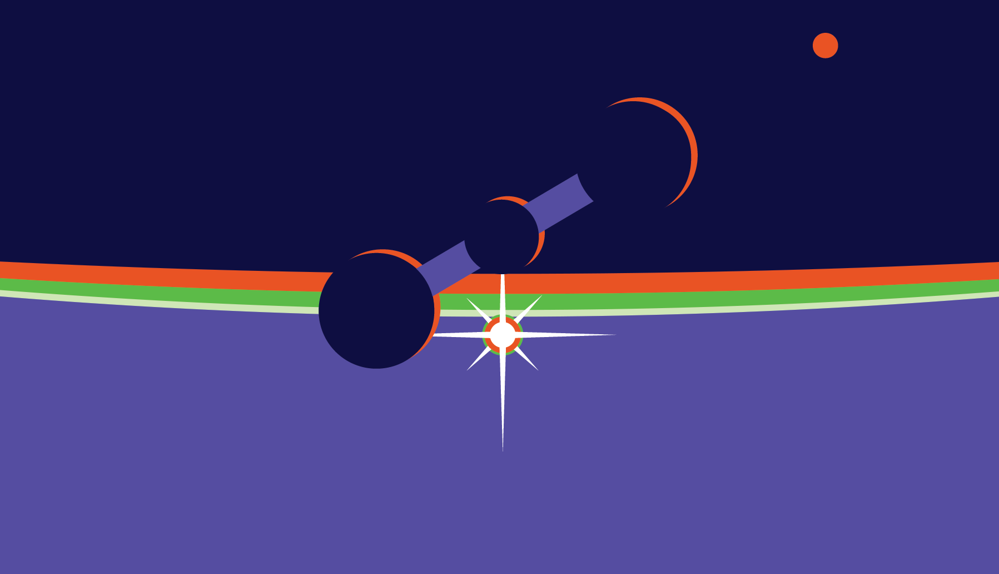
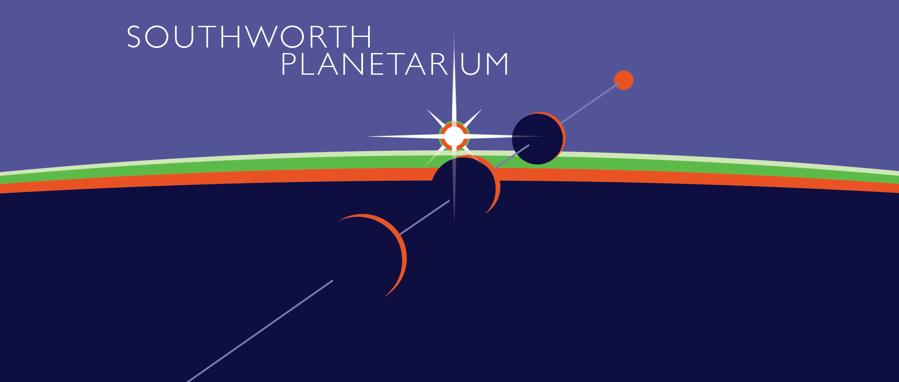

Arist's reflection:
Imagining a logo for the Southworth Planetarium took me through my creative inspiration and planning paces. On a macro scale, inspiration tends to arrive when I have a lot of different thoughts (or half-thoughts) banging around in my head at once. There is often a critical moment where a key piece of this unknown puzzle finds me. Perhaps I’m reading an article from Art News, or Hackaday, or seeing a video on YouTube about how the Voyager probes process instructions, or I notice the way light reflects and refracts off a sliver of plastic in my studio. The spark that kindles the idea coalescence process could be almost anything. But then, it really cannot be almost anything as it usually comes from some source that is part of a relatively carefully curated collection of seemingly random input that I surround myself with. A list would be exhaustive and exhausting, but it includes the above-mentioned article and youtube sources as well as things that I have scattered around my studio; particularly toys and games. But the moment of coalescence is just that, a moment of seeing something all at once. Sometimes that image is perfectly clear, but often it’s quite fuzzy and thus invites me to explore it and ask a lot of “what if” questions.
For the planetarium I surrounded my creative space with images, ideas and other mess that suggested voyaging into the unknown, travelling through interstellar space, peering into the inky darkness that seems to occupy most of space, and a feeling of the 1970s and 1980s. I chose those two decades as they followed the planetarium boom of the 50s and 60s1 and added color and design elements I thought might be fun, like the blue, orange, green triadic palette that made it to the final design. The key ingredient was the typeface used by Stanley Kubrick in his 1968 film, 2001 A Space Odyssey. While he used Futura for much of the text in the film, he turned to Gill Sans for the title screen text. Seeing that text immediately brought up an image of the Discovery spaceship that the main characters, including Dave Bowman, use to travel to Jupiter to investigate the “anomaly.” Seeing that ship immediately reminded me of the star projector at the planetarium. Images started to cascade in my mind and the basic design for the logo was there. I was really drawn to the idea of the planetarium’s projector as a spacecraft, just like Discovery; they both have similar lines and they both offer travel beyond the rim of our pale blue dot. I quickly sketched out a version of the logo as I saw it (below) and then left it alone to sit in Illustrator and in my mind.
At this point I move into evaluate and execute mode. What do I love about the design, what do I find abrasive or disjunctive, what do I find confusing. Looking at the logo again I really didn’t like the shape of the “spaceship/projector,” it felt chunky and sits awkwardly in space. I also didn’t understand why I’d placed the “planet” upside down. While I like the way it looks, it leaves me wondering what the orange circle is in the upper right corner. I know that it’s supposed to be a distant planet, but why would a planet sit in the “atmosphere” of another planet? It didn’t ring true. I did like the colors and how they sit together. I liked the orange limb on each of the spaceship’s spheres. I liked the rising star. Knowing how I felt drove the second pass of the logo. I wanted to flip the large planet 180 degrees and find a more energetic expression of the spaceship and bring the rising star more into the foreground.
After a few hours of play I arrived at a design that I felt captured my initial vision and felt balanced and energetic (Logo Version 2). I then spent time tweaking things like the thickness of the spaceship’s orange limbs, the placement of the pale blue line through the spaceship’s spheres and the placement and alignment of the text. These tweaks brought the logo to a point where I felt comfortable sharing it.

Most of the feedback I received was relatively positive and centered around the amount of thought I put into the logo and the overall design. One piece of critical feedback I received was a desire to see the spaceship’s sphere’s stretched out further apart in the “widescreen” version of the logo in order to make better use of the available space. I absolutely agree, giving the spheres a little more space would fill out the frame more fully and give the viewer’s eye more of a journey across the logo. It could also allow for an alignment of the the left edge of the text with the left-most part of the pale blue line that connects the spaceship’s spheres, further pulling the piece together (like a good area rug).
The major critique I would give myself is that this logo is simply too busy for a “modern” logo. There are too many fine details, thus limiting its use on small screens or cramped spaces. A third pass at the logo would involve simplifying it further and spending more time with it in the form of a small app icon.
I tend to learn the same things again and again when I make something: my first idea isn’t always my best; I need to spend time away from the alpha version of the work before I come back to it; and I need to trust my eyes and heart more than my logical, reductionist mind. A quick example of this last realization is the idea of the projector as “spaceship.” It’s an interesting idea, it makes logical sense, but rendering that projector-spaceship such that it gives off a “spaceship” vibe and a planetarium “projector” vibe requires too much detail in the line work. It’s better to let the “spaceship” idea live as a piece of the final render without making it something a viewer sees immediately. It’s okay to simply suggest a thing and it’s okay if the viewer doesn’t pick up on consciously. In fact, it’s likely better that way.
You can download and view all the Adobe Illustrator files for this project here.